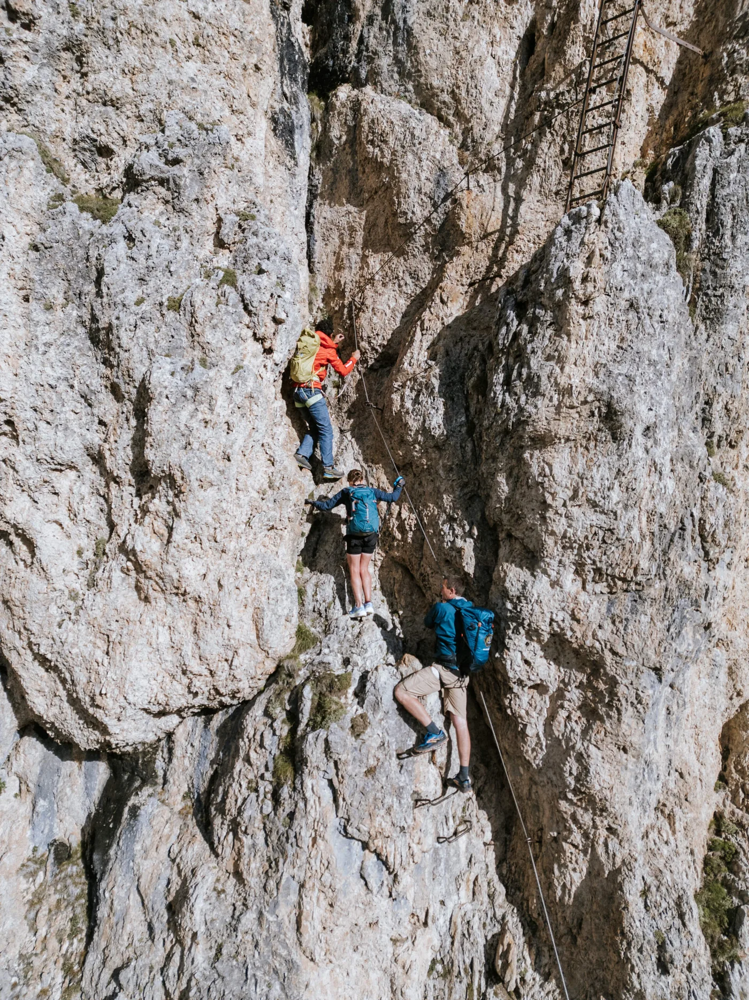
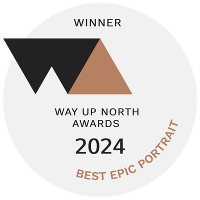

Mountain Elopement
Abenteuer über den Wolken
Intime Berghochzeiten in den Dolomiten/Alpen — nur ihr beide, ein Gipfel und eine Geschichte, die es zu erzählen lohnt.
Eure Geschichte beginnenIntime Berghochzeiten in den Dolomiten/Alpen — nur ihr beide, ein Gipfel und eine Geschichte, die es zu erzählen lohnt.
Eure Geschichte beginnento elope — dem Gewöhnlichen entfliehen und dort heiraten, wo die Welt still wird.
Wir gestalten intime Hochzeiten, die eure einzigartige Liebesgeschichte widerspiegeln. Wenn ihr auf große Locations und lange Gästelisten verzichten wollt, seid ihr bei uns richtig. Wir feiern Individualität und weben zeitlose Romantik in jedes Elopement.
Von kristallklaren Seen über schneebedeckte Gipfel bis zu stillen Almwiesen — unsere handverlesenen Orte in ganz Europa passen zu eurer Vision, und wir begleiten euch bei jedem Schritt.
So funktioniert’s →
Planung, Genehmigungen, Blumen, Torte, Zeremonie, Foto und Film — ein lokales Team, ein Ansprechpartner. Ihr kommt an, um alles andere haben wir uns gekümmert.
Vom Helikopter-Elopement über den Dolomiten bis zu handverlesenen Orten, die mit der Seilbahn erreichbar sind: Wir schaffen atemberaubende Tage für Paare, die das Gipfelgefühl wollen — mit oder ohne sechsstündige Wanderung.
Als Österreicher wissen wir, wie eure Berghochzeit rechtsgültig wird — mit einem Standesbeamten am Gipfel. Echte Zeremonie, echte Urkunde, echte Berge. (Symbolische Zeremonien in den italienischen Dolomiten sind natürlich genauso schön.)
Ein kleines, lokales Team, daheim zwischen Innsbruck und den Dolomiten — Plannerin Jlenia, Fotograf Andreas und Filmerin Stefanie. Ausgezeichnet: Way Up North Awards 2024.
Unser Planungspartner in den Dolomiten — Logistik, Genehmigungen, Unterkunft und jedes Detail vor Ort, damit ihr einfach nur da sein könnt.
Dolomites Wedding Planner →Gründer und leitender Fotograf — Tiroler, daheim zwischen Innsbruck und den Dolomiten. Ausgezeichnet (Way Up North Awards 2024), veröffentlicht im Rangefinder. Andreas führt jedes Paar ins richtige Licht und hält den Tag so fest, wie er sich wirklich anfühlt.
Blitzkneisser →Cineastische Elopement-Filme, die Bewegung, Klang und Gefühl eures Tages festhalten — die bewegte Ergänzung zu den Fotos.
No Matter The Weather →Natürliches, langanhaltendes Braut-Make-up & Haarstyling für Wind, Höhe und erstes Licht am Berg — ihr, im schönsten Licht.
Ansehen →"Ihr lokales Wissen war unbezahlbar. Sie empfahlen den perfekten Gipfel und machten unseren magischen Tag wirklich unvergesslich."
Eine Hochzeit in Bergen zu buchen, die man noch nie betreten hat, verlangt Vertrauen. Unsere Arbeit wurde über die Jahre ausgezeichnet und veröffentlicht — von Menschen, auf deren Urteil sich Paare verlassen.

AusgezeichnetWay Up North Awards 2024Sieger — Best Epic PortraitVorgestelltJunebug WeddingsÖsterreichs Beste · Fotograf 2017MitgliedFearless PhotographersGelistetes MitgliedVeröffentlicht inRangefinder MagazineRf Photo of the Day